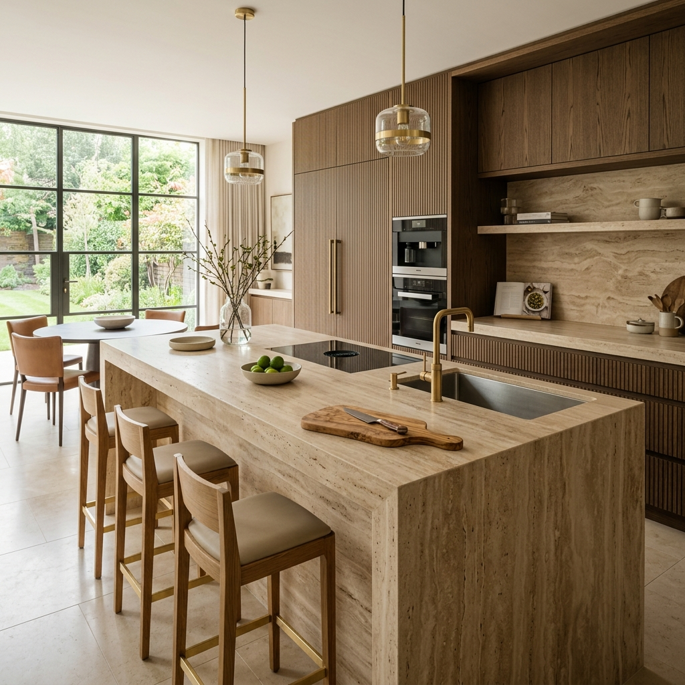
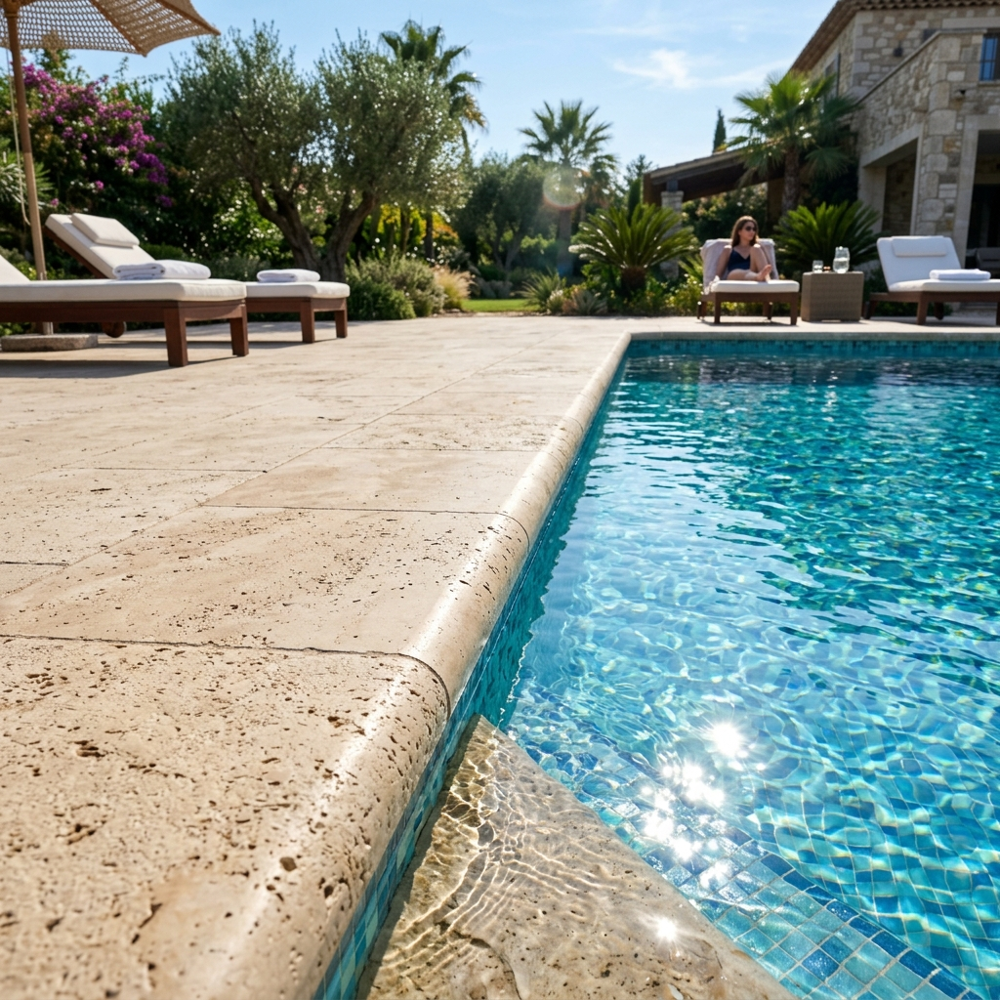

Chez OC Stone, venez découvrir une large gamme de travertin
Optez pour la pierre naturelle facile d’entretien qui ajoutera du cachet à votre maison, Oc Stone vous propose une très large gamme de pierre naturelle en Travertin du plan de travail, aux margelles, aux pierres de parement et de dallage. Venez découvrir notre large gamme dans nos locaux de Vinon sur Verdon.
Plan de travail
OC Stone est spécialisé dans la vente et la pose de plans de travail en travertin sur mesure. Le travertin est une pierre naturelle élégante, robuste et facile à entretenir.
En choisissant un plan de travail en travertin, vous apporterez une touche de sophistication et de chaleur à votre cuisine, à votre salle de bain, ou encore à votre pool-house. En effet, le travertin est une pierre qui se patine avec le temps, ce qui lui confère une grande personnalité.
De plus, chaque plan de travail est unique en raison des variations de couleurs et de motifs naturels présents dans la pierre. Nous proposons des plans de travail en travertin dans une variété de finitions, allant du poli au brossé, en passant par le vieilli, pour répondre à tous les goûts et tous les besoins.

Margelles
Chez OC Stone, nous proposons également des margelles de piscine en travertin, qui allient à la fois esthétique et sécurité.
Le travertin est une pierre naturelle idéale pour les margelles de piscine en raison de sa résistance à l’eau, sa durabilité et sa capacité à rester frais au toucher même sous le soleil chaud. De plus, notre gamme de margelles en travertin offre une variété de styles et de finitions pour s’adapter à tous les goûts et tous les types de piscines.
Nos margelles en travertin peuvent être polies pour une finition lisse et brillante, brossées pour un effet antidérapant, ou vieillies pour un aspect rustique et naturel. Le travertin est également facile à entretenir et à nettoyer, ce qui en fait un choix idéal pour les margelles de piscine.

Pierres de parement
OC Stone vous propose une sélection de pierres de parement intérieures et extérieures en travertin pour apporter une touche d’élégance naturelle à votre espace. Nos pierres de parement en travertin sont un choix parfait pour ceux qui cherchent à créer un style rustique et authentique.
Nous avons une large gamme de couleurs, de textures et de tailles pour répondre à tous les goûts et toutes les exigences. Que ce soit pour un mur intérieur ou extérieur, une cheminée, une entrée, ou même une façade, nos pierres de parement en travertin sont un choix esthétique et durable.
Nous proposons également un service de pose professionnel, avec une équipe d’experts qui peuvent installer les pierres de parement en travertin rapidement et efficacement, tout en assurant un résultat final impeccable.

Dallage
OC Stone vous propose une sélection de dallages en travertin pour habiller votre espace intérieur ou extérieur avec style. Le travertin est une pierre naturelle idéale pour les dallages en raison de sa résistance, de sa durabilité et de son esthétique naturelle.
Nous avons une variété de dalles en travertin qui s’adaptent parfaitement à tous les styles et à toutes les ambiances. Que vous cherchiez à créer un sol élégant pour votre entrée, une terrasse extérieure confortable, ou un espace de vie intérieur convivial, notre gamme de dalles en travertin vous offre un choix infini de couleurs, de textures et de tailles pour satisfaire toutes les exigences.
Nous proposons également un service de pose professionnel, avec une équipe d’experts qui peuvent installer les dalles en travertin rapidement et efficacement, tout en assurant un résultat final impeccable.

Besoin d'un conseil personnalisé ?
Nos experts sont là pour affiner votre choix et vous proposer un chiffrage précis.
Nous rendre visite en showroom